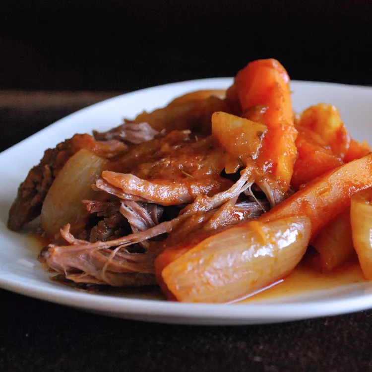

Mother's Pot Roast

Description
The best vegetable gravy you ever tasted — and the pot roast isn't bad
either! We always had this meal with mounds of mashed potatoes to
complement the delicious sauce. Great on a cold wintry evening!
Ingredients
- 2 ½ pounds tip round roast
- salt and pepper to taste
- 1 (15 ounce) can tomato sauce
- 1 onion, cut into thin strips
- 2 bay leaves
- 3 tablespoons all-purpose flour
Steps
-
Spray slow cooker with nonstick cooking spray. Season roast with salt
and pepper. Place meat in the pot, fat side up. Pour tomato sauce over
roast. Place onion over top. Toss in bay leaves. Cover and cook for 1
hour on High.
-
After 1 hour, reduce heat to Low and cook 6 to 8 more hours. Carefully
lift meat out of the pot and remove to a warm platter.
-
Pour drippings through a strainer into a medium-sized saucepan and
discard material in the strainer. Whisk flour into the liquid. Cook,
stirring constantly over medium heat until thickened. Season to taste
with salt and pepper; serve alongside roast.
Home